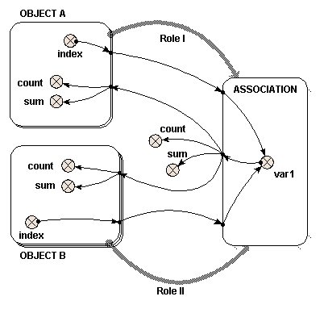

Two role arrows – two submodels
Two role arrows – two submodels
If a single role arrow between two models can be compared to nesting one submodel inside the other, using two role arrows to link submodels both to a third can be compared to creating an area where the two submodels overlap and are interleaved with each other. From the point-of-view of “Object A”, “Object B” is nested within “Object A”. From the point-of-view of “Object B”, “Object A” is nested within “Object B”.
The following model diagram illustrates some of the features of this arrangement. Two multiple-instance submodels are created, “Object A” with two instances, and “Object B” with three. Both these objects are linked with role arrows to the third submodel “Association”. One instance of “Association” is automatically created for each possible pair of instances of “Object A” and “Object B”.

In this case, there are six instances of “Association”, resulting from the two “Object A” and the three “Object B”. Inside “Association” is a variable “var1”. The two variables that influence “var1” have the full path names “../Object A/index” and “../Object B/index”. The instance of “Object A” and the instance of “Object B” from which each “index” is taken is determined by the instance of “Association”. Each instance of “Association” receives one of the six possible pairs of the “index” variables.
Local names for the two different full path names are created to avoid duplication, and to avoid using illegal characters such as spaces in the equation. Change the local names to be “indexA” and “indexB” to avoid confusion. Right-click the parameter name to alter it, as described in the help page. In this simple example, the equation for “var1” is “indexA*indexB”.
If this were represented by a table, it would look like this:
|
|
Object A – instance 1 indexA” = 1 |
Object A – instance 2 “indexA” = 2 |
|
Object B – instance 1 “indexB” = 1 |
Association – instance 1 “Var1” = 1 |
Association – instance 4 “Var1” = 2 |
|
Object B – instance 2 “indexB” = 2 |
Association – instance 2 “Var1” = 2 |
Association – instance 5 “Var1” = 4 |
|
Object B – instance 3 “indexB” = 3 |
Association – instance 3 “Var1” = 3 |
Association – instance 6 “Var1” = 6 |
The order of the instances in “Association” is determined by the order in which the role arrows are added. It is not usually important. To understand how “var1” is represented, six influence arrows are taken from “var1” to different parts of the model.
- Inside “Object A”
|
|
{var1} |
count({var1}) |
sum({var1}) |
|
Instance 1 |
{1 2 3} |
3 |
6 |
|
Instance 2 |
{2 4 6} |
3 |
12 |
- Inside “Object B”
|
|
{var1} |
count({var1}) |
sum({var1}) |
|
Instance 1 |
{1 2} |
2 |
3 |
|
Instance 2 |
{2 4} |
2 |
6 |
|
Instance 3 |
{3 6} |
2 |
9 |
To understand where both these sets of results for “{var1}” come from, look down (for “Object A”) or across (for “Object B”) the relevant lines of the full six instance “Association” table given above. The count() and sum() functions operate on the given {var1} to produce the results shown.
- Outside both “Object
A” and “Object B”
|
|
{var1} |
count({var1}) |
sum({var1}) |
|
|
{1 2 3 2 4 6} |
6 |
18 |
As with the use of a single role arrow, the
 condition symbol will permit the number of
instances of “Association” to be less than the product of the number of
instances of “Object A” and “Object B”.
The Boolean expression used in the condition symbol can involve influences
from other model elements and can use the index(x) function to return the instance of both “Object A” and “Object
B”, using x=1 and x=2 respectively.
condition symbol will permit the number of
instances of “Association” to be less than the product of the number of
instances of “Object A” and “Object B”.
The Boolean expression used in the condition symbol can involve influences
from other model elements and can use the index(x) function to return the instance of both “Object A” and “Object
B”, using x=1 and x=2 respectively.
In : Contents >> Model diagram elements >> Role arrows